Целью данной работы является получение навыков по управлению системным временем и настройке синхронизации времени.
На сервере посмотрим параметры настройки даты и времени, текущего системного времени и аппаратного времени (рис. @fig-1):
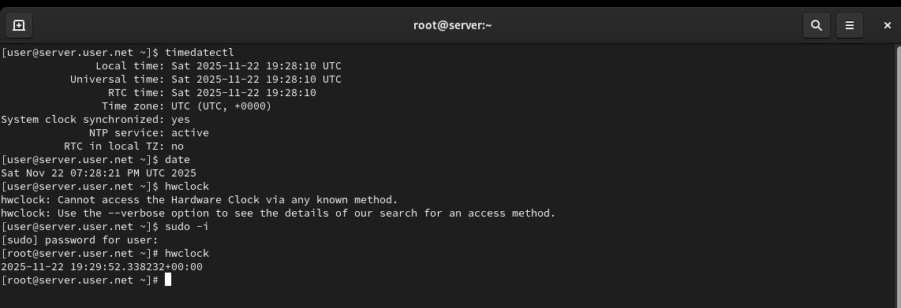
На клиенте посмотрим параметры настройки даты и времени, текущего системного времени и аппаратного времени (рис. @fig-2):
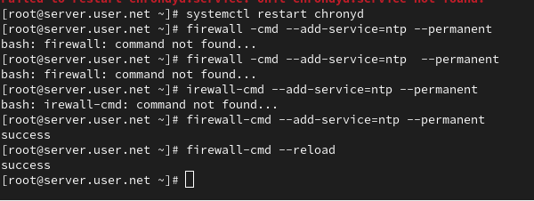
Установим на сервере необходимое программное обеспечение chrony (рис. @fig-3):
Проверим источники времени на клиенте до настройки (рис. @fig-4):
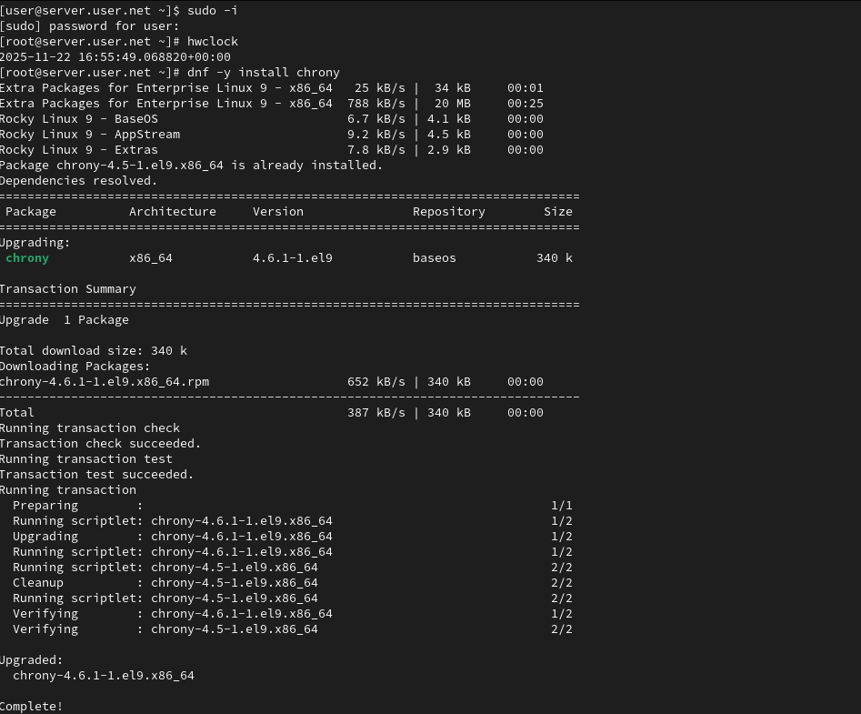
Проверим источники времени на сервере до настройки (рис. @fig-5):
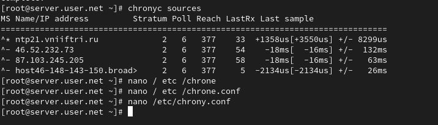
На сервере откроем на редактирование файл /etc/chrony.conf и добавим строку allow 192.168.0.0/16 (рис. @fig-6):
На сервере перезапустим службу chronyd и настроим межсетевой экран (рис. @fig-7):
На клиенте откроем файл /etc/chrony.conf и добавим строку server server.user.net iburst, удалив все остальные строки с директивой server (рис. @fig-8):
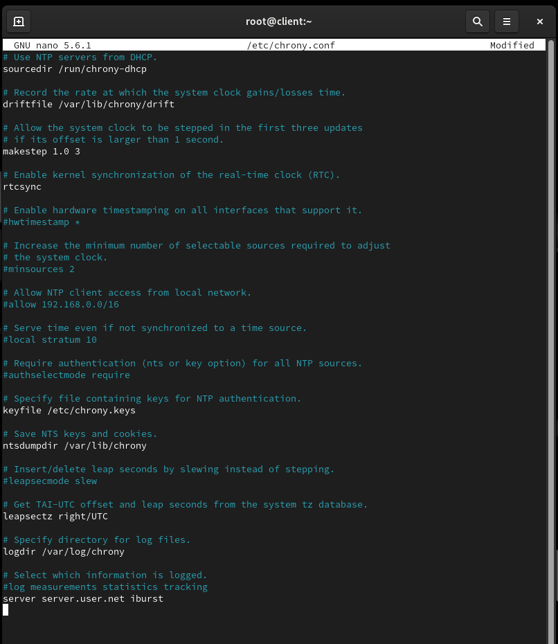
На клиенте перезапустим службу chronyd (рис. @fig-9):
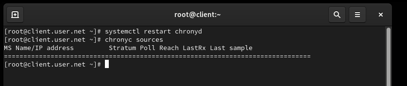
Проверим источники времени на клиенте после настройки (рис. @fig-10):
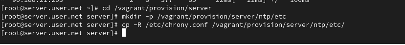
Проверим источники времени на сервере после настройки (рис. @fig-11):
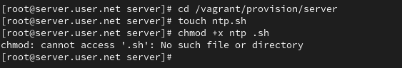
На виртуальной машине server перейдём в каталог для внесения изменений в настройки внутреннего окружения, создадим каталог ntp и исполняемый файл ntp.sh (рис. @fig-12):
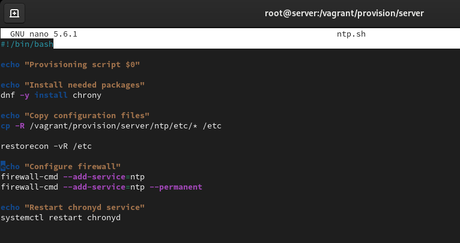
Откроем файл ntp.sh на редактирование и пропишем скрипт из лабораторной работы (рис. @fig-13):
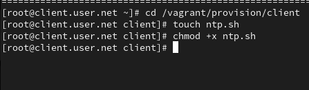
На виртуальной машине client перейдём в каталог для внесения изменений в настройки внутреннего окружения, создадим каталог ntp и исполняемый файл ntp.sh (рис. @fig-14):
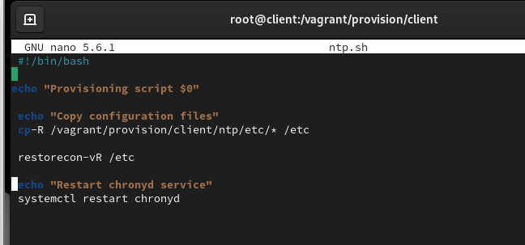
Откроем файл ntp.sh на редактирование и пропишем скрипт из лабораторной работы (рис. @fig-15):
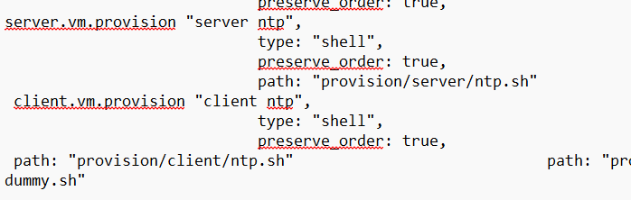
Для отработки созданного скрипта во время загрузки виртуальной машины server в конфигурационном файле Vagrantfile добавим запись в разделе конфигурации для сервера (рис. @fig-16):
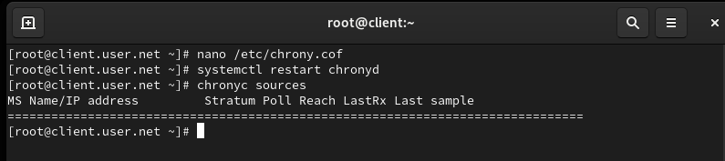
Для отработки созданного скрипта во время загрузки виртуальной машины client в конфигурационном файле Vagrantfile добавим запись в разделе конфигурации для клиента (рис. @fig-17):
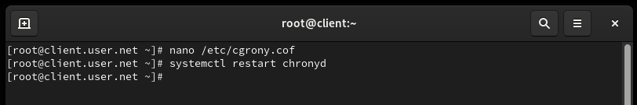
Проверим статус синхронизации времени на сервере (рис. @fig-18):
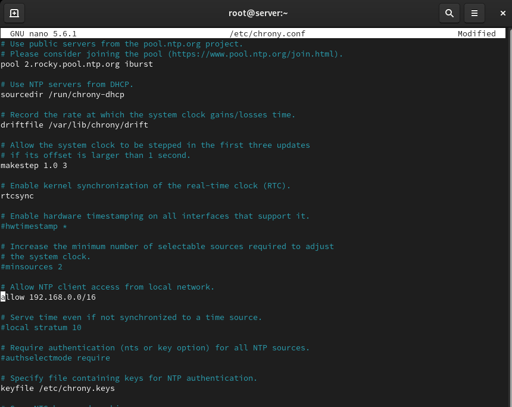
Проверим статус синхронизации времени на клиенте (рис. @fig-19):
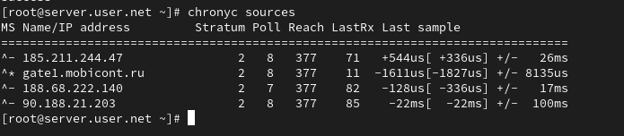
В ходе выполнения лабораторной работы были получены навыки по управлению системным временем и настройке синхронизации времени.
Почему важна точная синхронизация времени для служб баз
данных?
Синхронизация времени необходима для обеспечения корректности временных
меток в базе данных. Распределенные системы баз данных чувствительны к
разнице во времени между узлами, и несогласованность времени может
привести к проблемам с транзакциями и целостностью данных.
Почему служба проверки подлинности Kerberos сильно
зависит от правильной синхронизации времени?
Kerberos использует временные метки для предотвращения атак
воспроизведения билетов. Если время не синхронизировано, билеты могут
быть считаны как недействительные, что приведет к проблемам с
аутентификацией.
Какая служба используется по умолчанию для синхронизации
времени на RHEL 7?
На RHEL 7 служба синхронизации времени по умолчанию - chrony.
Какова страта по умолчанию для локальных
часов?
Страта 0 (нулевая) - локальные часы, являющиеся источником
времени.
Какой порт брандмауэра должен быть открыт, если вы
настраиваете свой сервер как одноранговый узел NTP?
Порт 123 (UDP) должен быть открыт для протокола NTP.
Какую строку вам нужно включить в конфигурационный файл
chrony, если вы хотите быть сервером времени, даже если внешние серверы
NTP недоступны?
В конфигурационном файле /etc/chrony.conf добавьте строку:
local stratum 10
Какую страту имеет хост, если нет текущей синхронизации
времени NTP?
Страта 16 - хост без синхронизации времени NTP.
Какую команду вы бы использовали на сервере с chrony,
чтобы узнать, с какими серверами он синхронизируется?
chronyc sources -v
Как вы можете получить подробную статистику текущих
настроек времени для процесса chrony вашего сервера?
chronyc tracking - эта команда предоставляет подробную
информацию о текущей синхронизации времени, дисперсии, коррекции часов и
других параметрах.